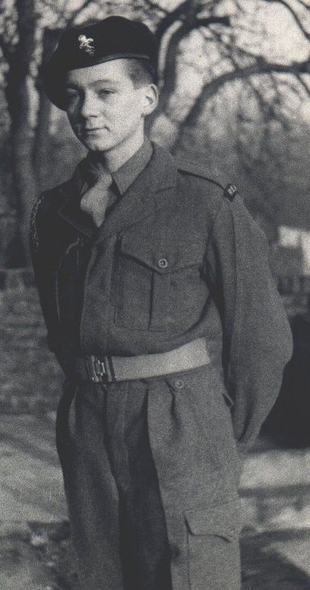

National Service
October 20th, 1952 was a date to remember! After having visited
the Royal Navy Careers Office in Chatham and sitting the IQ test for the
250 limited entrants for the year, and performing, badly (I thought), I
bumped into Pete Trevor who exclaimed that he had just signed on in the
REME as a regular for 3 years for the princely wage of £3.5.0.d per week
and choose when you go. - I promptly went along with him and followed suit
- October 20th was to be the date we were to join up together.(Later I was
contacted by the Royal Navy, who said they had been in touch with the Sea
Cadet Corp and agreed to take me into the Navy for my National Service. The
difference in pay 25/=d a week against £3.5.0d. persuaded me! A soldier I
would be.
We had a travel warrant. - A train ticket paid for by the army, and had to
report to REME barracks at Blandford in Dorset. We arrived there about tea
time and expected to be met from the train by an army lorry or something...
We were the only two on the train and the porter chappie said it was along
that road, about two miles, pointing to the distance. We set off and
arrived at the entrance, or Guard room. The was a lad on duty at the gate
with a rifle and he asked what we wanted. I said we have come to join up.
He took us in the guard room and another chap said he would take us to the
stores and get some blankets etc., and tomorrow someone would deal with us.
(Induction I think they called it). We were shown to a long hut with about
30 beds in it, and told to make ourselves comfortable. I was soon off to
sleep.
I awoke to the sound of a recording of a bugler playing 'Reveille' and
swung my legs over the edge of the bed. I heard voices coming along the row
of huts and there was a thump thump thump at the door, which then flung
open. There stood a lance corporal and a Staff Sergeant. I stood up and
said 'Good morning' I was immediately corrected by the corporal 'Good
morning Staff'. The Staff sergeant then stood squarely at the foot of Pete
Trevor's bed and banged his stick three times on the floor. - Pete never
stirred. The Staff sergeant put the slick at an angle betwen the left hand
leg of the bed and gave it a twist. The bed turned on it's side and Pete
was on his feet quicker than that. He faced up to the Staff sergeant and
looked him in the eye. (Pete was about 6" shorter than the Staff sergeant)
and said " You didn't ought'a done that" I cringed! The Staff sergeant said
"Breakfast is at 7.00 parade at 8.00" and they left.
We found our way to the canteen and there was eggs, bacon, fried
bread, baked beans and pint mugs of tea, and as much bread as you wanted.
There were quite a few blokes there, mostly in uniform, but one or two like
us still in civvies. After breakfast we followed the mass and 'fell in' on
the parade ground. We were detailed off to the stores again and given a
complete kit. Pants, socks, boots, battle dress, rifle, dusters, brushes
(had to buy our own polish, I remember). I think we were given an hour to
put it all away. We were told that on a kit inspection, if anything was
missing we would have to pay three times the value to replace it, so take
care of everything. Then we were given an army number, paybook and all the
other necessary gubbins, then had to report to the parade ground where we
were taught the basics of marching. Of course, having been a Sea Cadet for
some years I had no problem with that. Pete, unfortunately did!
Basic training continued for 6 weeks, by the end of which time we could
shoot, march, clean our kit and swear like old troopers! Pete suffered
badly for his earlier indiscretions and still continued to argue back. Some
people never learn! I was then transferred to Barton Stacey. A horror camp
with a bad reputation, although I found it OK. I think Pete and I were
separated at that point. I had elected to become a vehicle mechanic and
needed to attend classes in metal work and vehicle contruction principals.
Ackerman comes to mind.
I was not too good at the practical side of things, but I was amazed at the
Wednesday afternoon lessons giving to all and sundry. Basic arithmetic and
English. The Royal education wallah came into the room and said why aren't
you working? I said I've done it all. He looked at my paper with long
division on it, and said right - you needn't come on Wednesdays any
more.
A little later we were all out shovelling earth from one place to another,
for no apparent reason other than keeping us busy. I remember it was a
Maudsley diesel lorry with a flat back for the dirt. It was heavy going.
The driver was sent for to go somewhere else. The corporal asked if there
was anyone with a civilian driving licence. I volunteered that I had, and
he said right. You put the shovel down and drive the lorry..... That was a
God send! I spent the rest of the day sitting in the cab smoking and
watching all the other guys shovel dirt onto my lorry.
From there I was moved to Ellesmere Oswestry, R.E.M.E. trade training camp
in Shropshire. We used to be allowed W/E passes. I would get a lift on the
back of a mate's motorbike to Crewe, then a train to Euston. From there I
would make it indoors for the early hours of Saturday morning. I would need
to leave quite early on a Sunday to make it back before reveille on the
Monday. It didn't take many weekends of that before I found myself in a bad
mental state, and promptly suffered a nervous breakdown. I was admitted to
Netley hospital, Nr. Southampton, and from there was discharged after 292
days service. All in all, not the best of experiences. - I still can't mend
motor vehicles!